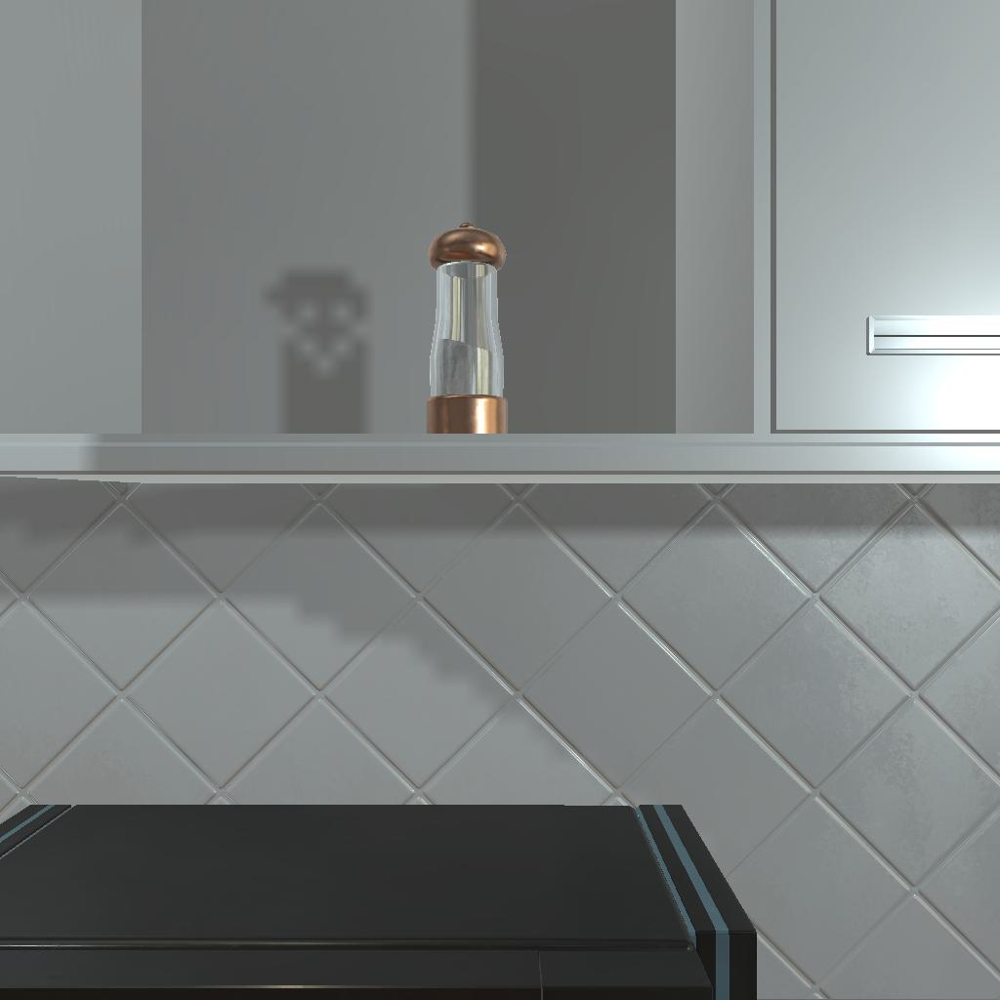

---------------------------------------------------------task: 21---------------------------------------------------------
--------------------------------------------------------------------------------------------------------------------------------------------------------------------
--------------------------------------------------------------------------------------------------------------------------------------------------------------------
Step:--------------------------------------------------------------------------9-------------------------------------------------------------------------------
----------------------------------------
VLM Prompt:
Image1:
Image2:
**Instruction**
1. Analyze the provided images to identify all visible household objects and compare the difference between images (e.h. whether the object is opened or not and taken on hand or not), focusing on those relevant to the task description "put a hot cup in countertop."
2. Use the analysis of images and the task hint "The agent must find an object of the desired type, pick it up, go to a microwave, heat the object with the microwave, then find the correct location to place it, and put it down there. The agent does not need to use the microwave button or open the microwave to heat the object, and the agent just needs to do action that is "heat the object with the microwave"." to answer the question: what is the most reasonable action in the choices for the task description "put a hot cup in countertop"?
3. Decide and write the answer using the template: The answer is: (i): , where i is the real number. If there is no desired object in images, search every place based on **Initial Observation** to find the object. And if no one is exactly correct, choose a similar answer.
**Initial Observation**
You are in the middle of a room. Looking quickly around you, you can see cabinet (1-6), microwave (1), countertop (1-2), coffeemachine (1), toaster (1), sink (1), sinkbasin (1), fridge (1)
**Answer Choices**
(1): go to cabinet 1
(2): go to cabinet 2
(3): go to microwave 1
(4): go to cabinet 5
(5): go to cabinet 6
(6): go to countertop 1
(7): go to coffeemachine 1
(8): go to toaster 1
(9): go to countertop 2
(10): go to sink 1
(11): go to sinkbasin 1
(12): go to fridge 1
(13): close cabinet 4
(14): take saltshaker 1 from cabinet 4
(15): examine cabinet 4
**Answer**
Let's think step by step by following the instructions.
----------------------------------------
----------------------------------------
Original Response:
Image Analysis:
- In Image 1, we can see a part of a kitchen with a cabinet that has a handle and is likely to be closed. There are no objects on the countertop.
- In Image 2, we see the same part of the kitchen, but this time there is a salt shaker on the countertop, which was not present in Image 1.
Task Analysis:
Based on the task description, "put a hot cup in countertop," the agent needs to find a cup, heat it in the microwave, and then place it on the countertop. Since the task does not require interaction with the microwave buttons or opening the microwave, we can assume the agent has the ability to "heat the object with the microwave" through an implied action.
Comparing the provided images, we can determine that the cabinet shown (assumed to be cabinet 4 based on the answer choices) is not relevant to the task, as it contains a salt shaker and the task requires a cup. Additionally, the countertop shown does not have a cup on it in either image.
Answer Choice Analysis:
The task requires a cup to be heated and placed on the countertop. Therefore, the agent must first find a cup. The initial observation mentions various cabinets, a microwave, a coffeemachine, and a fridge, among other things. The most likely places to find a cup would be in a cabinet or possibly in the microwave if there's already a cup inside. Since the task does not mention where the cup is initially located, we must search for it. The coffeemachine is another potential location, as cups are often stored nearby.
Based on this reasoning, the most reasonable actions would be to go to the cabinets or the coffeemachine to find a cup. However, since the agent does not need to interact with the coffeemachine and only needs to find a cup, we can rule out option (7). The microwave (option 3) could be the next step after acquiring a cup.
The answer is: (1): go to cabinet 1, as it is the first cabinet in the list, and it is a logical starting point for searching for a cup. If the cup is not found in cabinet 1, the agent should proceed to search the other cabinets based on the initial observation.
----------------------------------------
----------------------------------------
>>> Refine Original VLM Response and Get Pure Action: go to cabinet 1, as it is the first cabinet in the list, and it is a logical starting point for searching for a cup
----------------------------------------
-----------------------------------------------------------------
Running time: 19.93016791343689 seconds
Total Money: 10.625550000000002
-----------------------------------------------------------------
-----------------------------------------------------------------
Text Observation:Nothing happens.
-----------------------------------------------------------------
UNSUCCEED